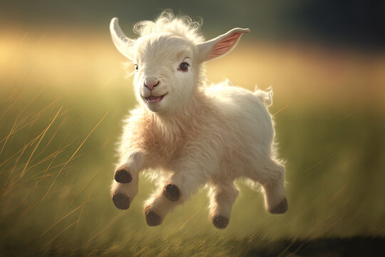
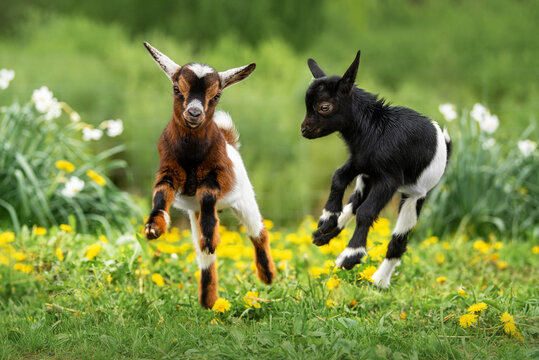

Cute Techniques To Make Us Laugh
Muhammad MasoodEveryone loves baby animals, but there's something particularly special about baby goats, often called "kids". Their small feet make tiny tapping sounds as they trot around, and their soft hair feels wonderful to touch. When they call out with their unique sounds, it's hard not to laugh. One of the best things is watching them play. Their jumps, skips, and playful nudges with one another are pure entertainment. Plus, the way they stick close to their moms shows just how sweet and dependent they are during their early days.
| Goat Number | Color | Birth Date |
|---|---|---|
| 1 | Black | 09/10/2015 |
| 2 | White | 12/15/2022 |
| 3 | Dark Brownish | 12/10/2023 |

But their looks aren't the only thing that captures my heart. Kids are full of energy and curiosity. Whenever they're introduced to a new place or toy, their excitement is palpable. They run around with tails wagging, eager to explore every nook and cranny. When they play, it's like watching a game of tag, with little goats darting here and there, chasing each other with glee. Their playful nature is a reminder of the simple joys of life. And no matter where they are - on a farm, in a cozy backyard, or even just being showcased in online videos - these little goats have the power to bring a big smile to anyone's face.
Funniest Things They Do
Muhammad MasoodBaby goats, or "kids" as we call them, are known for doing some of the craziest and funniest things. Have you ever seen them jump? It's like they have springs in their feet! They bounce around all day, leaping into the air, sometimes even hopping onto other animals or objects. It's a sight that can make anyone giggle.
Another funny thing they do is headbutting. Yes, these little ones will gently bump their heads with their playmates. It's their way of saying, "Hey, play with me!" or "This is my spot!" And when they're not jumping or headbutting, they might be found trying to climb. They could be scaling small hills, piles of hay, or even attempting to mount larger animals like cows or horses. It's as if they believe they're mountain goats, even at such a young age!
But perhaps the most amusing thing about baby goats is their curiosity. They are nosy little creatures. If you drop a bucket or leave a shirt hanging, you can bet a kid will come over to check it out, nibble on it, or even try to wear it! Every day with them brings new surprises and laughter. They're truly nature's little comedians, always ready to put on a show.
